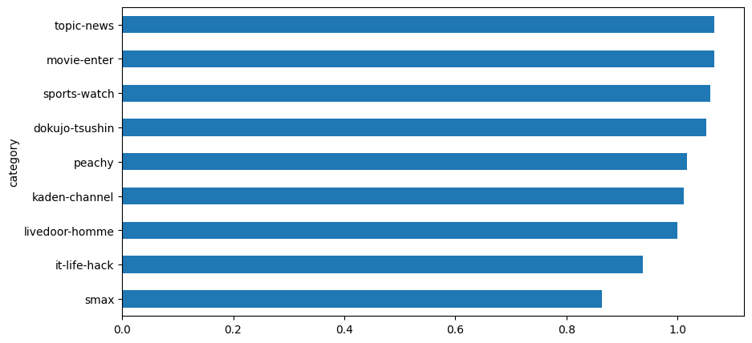

!pip install tiktoken
!curl -O https://www.rondhuit.com/download/ldcc-20140209.tar.gz
!tar -zxvf ldcc-20140209.tar.gzOpenAIのGPTのAPIのToken数に関する調査
NLP
LLMs
LangChain
結論
OpenAIのGPTモデルでドキュメントを処理する際に、日本語の1文字は大よそ1Tokenに等しいです。千文字のドキュメントを処理するためには、概算で、スピード重視のgpt-3.5-turboを使う場合は0.59円かかります。性能重視のgpt-4-32kを利用する場合は、9.7円かかります。
目的
GPT3を用いた提案をする際によく聞かれることとしては、コストいくらかのことです。GPT3のAPIの課金は下記のように文字数ではなく、tokenを単位としているため、説明するのは簡単ではないです。
本文は値段の説明をしやすいように、実際のデータで実験してみます。ついてにTicTokenの挙動についても掘り下げてみます。 実験のステップは下記の通りです。
- livedoor ニュースコーパスをダウンロードする
- ニュースコーパスを
tiktokenでトークナイズする - Token数/文字数で、千文字あたりの値段を計算する
| モデル名 | 値段(Prompt) | 値段(補完) | 最大トークン数 | モデルサイズ(推測) |
|---|---|---|---|---|
| gpt-3.5-turbo | $0.002 | $0.002 | 4,096 | 6.7B |
| gpt-4 | $0.03 | $0.06 | 8,192 | 不明 |
| gpt-4-32k | $0.06 | $0.12 | 32,768 | 不明 |
前準備
GPT3のTokenizerはtiktokenというライブラリを利用しているので、検証するためにはtiktokenをインストールする必要があります。
今回利用するデータは、livedoor ニュースコーパスです。livedoor ニュースコーパスは、9つのカテゴリに分類された、記事のデータセットです。
次に文字数とトークン数の関係を計算します。
import glob
import pandas as pd
from matplotlib import pyplot as plt
import tiktoken
# load data
path_list = glob.glob('./text/*/*.txt')
txt_list =[]
for path in path_list:
category = path.split('/')[2]
with open(path) as f:
# skip first 2 lines
for i in range(2):
f.readline()
txt_list.append(( category, f.read()))
df = pd.DataFrame( txt_list, columns=['category', 'text'])
df["word_count"] = df["text"].apply(lambda x: len(x))
# cl100k_base is for gpt-4, gpt-3.5-turbo, text-embedding-ada-002
# https://github.com/openai/openai-cookbook/blob/main/examples/How_to_count_tokens_with_tiktoken.ipynb
encoder = tiktoken.get_encoding("cl100k_base")
df["token_ids"] = df["text"].apply(lambda x: encoder.encode(x))
df["token_count"] = df["token_ids"].apply(lambda x: len(x))
df["tokens"] = df["token_ids"].apply(lambda x: encoder.decode_tokens_bytes(x))
df["word_token_ratio"] = df["token_count"] / df["word_count"]計算
まず、処理するデータの様子を実際に見てみましょう。
print("ドキュメントのサンプル：")
for i in txt_list[0][1].split('\n')[:10]:
print(i)
print("...")ドキュメントのサンプル：
【DVDエンター！】誘拐犯に育てられた女が目にした真実は、孤独か幸福か
2005年11月から翌2006年7月まで読売新聞にて連載された、直木賞作家・角田光代による初の長編サスペンス『八日目の蝉』。2010年に檀れいと北乃きいの出演によりテレビドラマ化された同作が、2011年4月に永作博美と井上真央の出演によって映画化。そして、劇場公開から半年が過ぎた10月28日、DVD＆ブルーレイとなって発売されました。
八日目の蝉
妻子ある男と愛し合い、その子を身ごもりながら、あきらめざるをえなかった女。彼女は同時に、男の妻が子供を産んだことを知る。その赤ん坊を見に行った女は、突発的にその子を連れ去り、逃避行を続けた挙句、小豆島に落ち着き、母と娘として暮らしはじめる。
不倫相手の子供を誘拐し、4年間育てた女
永作博美が演じる野々宮希和子は、不倫相手の子を宿しながらも、彼の「いずれ妻と別れるから、それまで待ってくれ」という常套句を信じて、中絶。後遺症により、二度と子供を産めない身体となってしまいます。その後、不倫相手から彼の妻が出産したことを知らされ、別れを決意。最後に諦めをつけるため、彼らの生後6ヶ月の赤ん坊・恵理菜の顔を見た希和子でしたが、自分に笑顔で向けた恵理菜を見て、思わず誘拐。名前を変えて恵理菜を薫と名付けると、人目を避けて各地を転々とし、二人で幸せな時間を過ごしますが、辿り着いた最後の場所・小豆島で4年の逃避行に終止符を打ちます。
...合計7,376件のドキュメントがあり、平均文字数は1,200文字程度です。
df.word_count.describe().astype(int)count 7376
mean 1259
std 763
min 37
25% 730
50% 1069
75% 1602
max 12163
Name: word_count, dtype: int64文字数とトークン数の割合を見ると、以外に1文字が1トークンになっていることがわかります。また、この傾向が記事の種類によりますが、大きな違いはありません。
df.word_token_ratio.mean()1.008244127016698df.groupby("category").word_token_ratio.mean().sort_values().plot.barh(figsize=(10, 5))<Axes: ylabel='category'>
これで文字数とトークン数の関係がわかることによって、ドキュメントを処理する課金を概算計算することができます。概算ロジックは以下と仮定です。
インプットの長さは2000字とする。内訳は以下の通り。
処理するドキュメントの長さは1000字とする。
タスクの説明や、処理の例は1000字とする。
アウトプットは200字とする。
為替レートは1ドル=135円とする。
これで計算すると1ドキュメントを処理するためには:
スピードを求める
gpt-3.5-turboの場合は、0.002 * 2200 / 1000 * 135 = 0.59円 かかります。性能を重視する
gpt-4-32kを利用する場合は(0.03 * 2000 + 0.06 * 200) / 1000 * 135 = 9.7円 かかります。
TicTokenの挙動
BPEモデルが違う
日本語は英語よりトークン数が多いと話している投稿は過去Twitterで見たことがあります。今回実際に計算してみると、日本語の1文字は大よそ1Tokenに等しいことがわかりました。それはDecodingするモデルが違うためです。
ここからはちょっと深い話をします。TikTokenはBPE(Byte Pair Encoding)というデータ圧縮法に基づいて開発しました。コンピューターは文字を扱うことができないので、文字を数値に変換する必要があります。BPEは文字列をシンボルに置き換えることで、文字列を数値に変換します。BPEは頻繁に現れる文字のペアや、複数の文字を組み合わせたシンボルを生成します。それにより、入力するシーケンスの長さを短くすることができます。
例えば、“ab ab b”の文字列について、“ab”を0に、“b”を1に置き換えると、“0 0 1”という文字列になります。このように、BPEは文字列をシンボルに置き換えることで、もともと長さが7の文字列を長さが5のシーケンスに変換できました。
また、どの組み合わせをシンボルにするかはデータから学習することによって決められています。gpt-3.5-turboとgpt-4-32kのモデルは以前のGPT3のモデルが違うので、Tokenizeした結果も違います。
実際の例を見ましょう。
gpt4_encoder = tiktoken.encoding_for_model("gpt-4-32k")
gpt3_encoder = tiktoken.encoding_for_model("text-davinci-003")
print("GPT3のトークン数：")
print(f"こんにちは: {len(gpt3_encoder.encode('こんにちは'))}")
print()
print("GPT4のトークン数：")
print(f"こんにちは: {len(gpt4_encoder.encode('こんにちは'))}")GPT3のトークン数：
こんにちは: 6
GPT4のトークン数：
こんにちは: 1GPTのBPEモデルは日本語をバイト化してからトークン化している
GPT3のToken数がGPT4より多いことがわかります。例えば、「こんにちは」はGPT3で6Tokenになりますが、GPT4では1Tokenになります。
「こんにちは」については5文字はしかないですが、なぜ6Tokenになっているかに疑問を思うかもしれません。それはGPT3が多言語に対応するために、直接テキストで切っていなくて、日本語をまずバイトに変換して切っているからです。バイト化することにより違う言語でも共通のTokenで表現することができます。
tokeinzer_result_byte = gpt3_encoder.decode_tokens_bytes(gpt3_encoder.encode('こんにちは'))
print("Tokenize結果:", tokeinzer_result_byte)
tokeinzer_result = [i.decode() if len(i) == 3 else i for i in tokeinzer_result_byte ]
print("Decoding結果:", tokeinzer_result)Tokenize結果: [b'\xe3\x81\x93', b'\xe3\x82\x93', b'\xe3\x81\xab', b'\xe3\x81', b'\xa1', b'\xe3\x81\xaf']
Decoding結果: ['こ', 'ん', 'に', b'\xe3\x81', b'\xa1', 'は']上記の結果からわかることとしては、日本語1キャラクターは3バイトで表示しています。「こんにちは」の中の「ち」のみ2Tokenに分解されました。
実際の比較
つぎに、実際にデータでGPT3とGPT4のTokenizeの結果を比較してみましょう。
df["token_ids_gpt3"] = df["text"].apply(lambda x: gpt3_encoder.encode(x))
df["token_count_gpt3"] = df["token_ids_gpt3"].apply(lambda x: len(x))
df["word_token_ratio_gpt3"] = df["token_count_gpt3"] / df["word_count"]
df["word_token_ratio_gpt3"].mean()1.317645208825121まとめ
過去にGPT3を使う場合は日本語のToken数は英語の2倍になる噂があります。GPTモデルで日本語のドキュメントを処理する際、1文字はおおよそ1トークンに等しいことがわかりました。千文字のドキュメントを処理するための概算コストは、スピード重視のgpt-3.5-turboを使う場合は0.59円、性能重視のgpt-4-32kを利用する場合は9.7円です。
また、GPT3とGPT4が使うTokenizerが違い、GPT3のトークン数はおおよそGPT4の1.3倍になります。